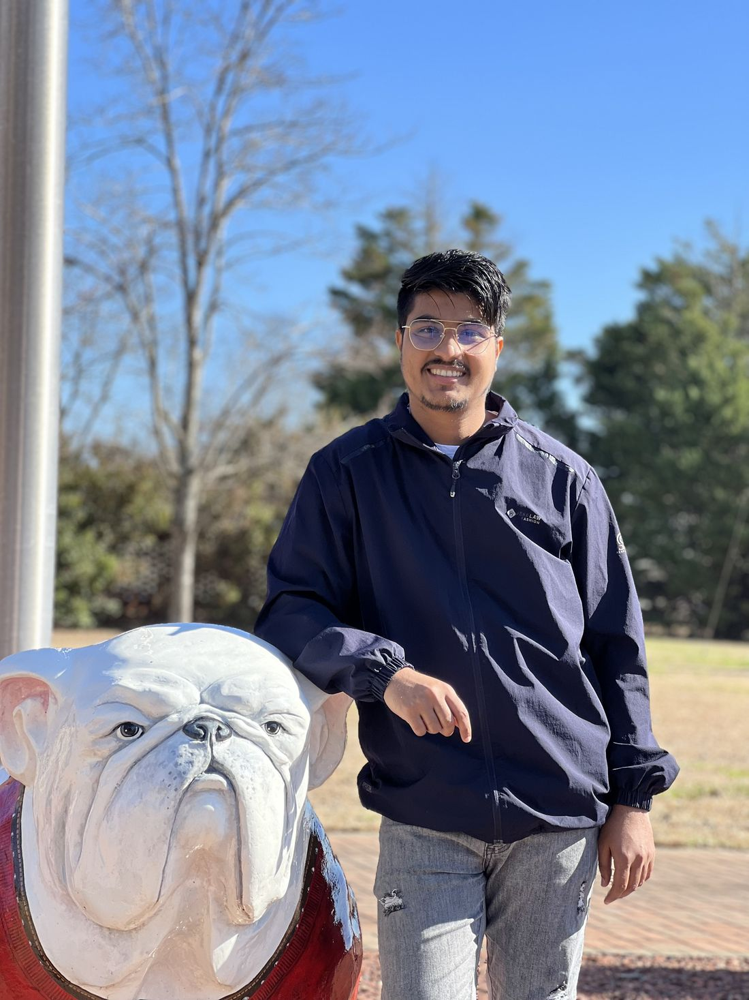

2015—2020
Chitwan, Nepal
B.Sc. in Agriculture
Agriculture and Forestry University. Built the agronomic foundation that continues to anchor every sensor, model, and line of code.
Precision agriculture · Athens, Georgia
I’m Anish Bhattarai, a Ph.D. student and graduate research assistant at the University of Georgia. My work connects agronomy, sensing, geospatial analysis, and software to make complex field data useful.

Athens, GA · 2026“The most useful model is the one that helps someone make a better decision in the field.”
Academic journey
An academic path from an agricultural education in Nepal to doctoral research at the University of Georgia—connecting field agronomy with sensing, spatial data science, and practical decision tools.
Chitwan, Nepal
Agriculture and Forestry University. Built the agronomic foundation that continues to anchor every sensor, model, and line of code.
Athens, Georgia, USA
Joined the University of Georgia as a graduate research assistant and transitioned directly into the doctoral program in 2025.
University of Georgia
Researching sensor-based nitrogen management and field-scale weather-data representativeness. Expected completion: 2027.
Sensor-based nitrogen management that considers yield, fiber quality, nitrogen-use efficiency, and profitability.
Comparing station and gridded products while testing the influence of distance, topography, soil, land cover, and other environmental conditions.
Reproducible workflows and interactive tools designed for farmers, Extension agents, researchers, and other agricultural decision-makers.
Six peer-reviewed papers, thirteen awards and honors, five outreach activities, and leadership in two UGA student organizations.
Selected work
Evaluated flight altitude, speed, point-cloud subsampling, and terrain classification to make canopy-height data collection more efficient.
Read the publicationHow can UAV flight and point-cloud processing choices produce reliable cotton canopy-height measurements without collecting or processing more data than necessary?
Flight altitude, flight speed, point-cloud subsampling, and terrain-classification settings.
Acquire UAV LiDAR → classify terrain → derive canopy height → compare settings → translate results into practical collection guidance.
Efficient acquisition and processing make high-resolution crop measurements more usable for researchers and precision-agriculture teams.
Research output First-author paper published in Remote Sensing, 2025.
Comparing station networks with PRISM and Daymet through geostatistics, machine learning, and landscape covariates.
Active researchWhen do gridded weather products represent the conditions experienced in an individual agricultural field—and where do meaningful differences remain?
University of Georgia weather-station observations alongside PRISM and Daymet gridded products.
Geostatistics and machine learning test how station distance, topography, soil, land cover, and environmental conditions influence agreement.
Uncertainty in temperature and precipitation can affect irrigation scheduling, pest management, nutrient recommendations, and crop performance.
Current phase Doctoral research at the University of Georgia, active since 2025.
An interactive workflow for spatial data acquisition, comparison, visualization, and customized downloads.
Open the dashboardReduce the friction between finding spatial data and leaving with a clean, customized dataset that is ready for analysis.
Spatial data acquisition, side-by-side comparison, interactive visualization, and targeted downloads in one workflow.
Farmers, Extension agents, and researchers who need to visualize spatial variability and compare sources side by side.
A visual, reproducible workflow makes geospatial choices easier to understand, document, and repeat.
Live output Interactive R Shiny application with customized spatial-data downloads.
Compared crop sensors and nitrogen recommendation approaches across yield, fiber quality, use efficiency, and profitability.
Field researchHow consistently can crop sensors guide in-season nitrogen decisions across changing cotton field environments?
Active and passive crop sensors, sensor-based recommendations, and traditional nitrogen-management practices across field environments.
Sensor accuracy, consistency, and practical usefulness alongside yield, fiber quality, nitrogen-use efficiency, and profitability.
Useful variable-rate recommendations should reduce input waste while maintaining crop performance and supporting farm economics.
Research period Multi-environment cotton field research conducted from 2022 to 2025.
A package and plugin for reproducible plant-pixel extraction from field imagery and downstream crop analysis.
View the QGIS pluginMake plant-pixel extraction from field imagery repeatable and easier to carry into phenotyping and crop-analysis workflows.
Bring in field imagery → identify plant pixels → create consistent outputs → continue into downstream crop analysis.
A package and companion plugin designed around reproducible image-processing steps.
Reliable segmentation is a foundational step for turning large image collections into comparable plant measurements.
Current phase QGIS plugin (version 3.8) is public on GitHub; development continues since 2026.
Tools & dashboards
Research is most useful when someone else can run it. These apps, plugins, and workflows are public — point at any tool to open it here, then try it or read the code.
QGIS plugin & package · v3.8
Separates plants from soil in drone images, with no training data.
Live dashboard · R Shiny
Turns free satellite imagery into a sampling plan you can take to the field.
 Screenshot
ScreenshotLive dashboard · Open data
Shows how El Niño and La Niña shift cotton yields, down to the county.
Hackathon project · CANVAS 2026
Recommends the most profitable nitrogen rate for a Midwest corn field.
R workflow · Open code
The R workflow behind my UAV LiDAR research, step by step.
Research code, drone-data processing scripts, and data-science coursework are also public. Browse all repositories on GitHub
Curriculum vitae
Filter a concise view here or open the complete three-page CV.
European Journal of Agronomy, 177, 128090.
Computers and Electronics in Agriculture, 241, 111270.
Remote Sensing, 17(9), 1504.
Field Crops Research, 325, 109822.
Acta Scientifica Malaysia, 5(1), 17–19.
Big Data in Agriculture, 3(1), 6–11.
Nitrogen Use Efficiency Workshop, Mississippi State University.
ASA, CSSA, and SSSA Annual Meeting, Salt Lake City.
UGA College of Agricultural and Environmental Sciences.
University of Georgia.
University of Georgia.
The downloadable CV includes all six publications, thirteen awards, extension activities, funding, skills, and project links.
Beyond the research
Built an agronomic foundation at Agriculture and Forestry University and now develops precision-agriculture research at the University of Georgia.
President of UGA’s Nepalese Student Association from 2024–2025 and Secretary of the Integrative Precision Agriculture Club from 2024–2026.
This part stays intentionally unfilled until Anish chooses the favorites and stories he wants to make public.
Curating nextA conversational portfolio
An AI guide answers from Anish’s CV, publications, and project record. Ask about his research, what a paper found, his skills, awards, or education — in your own words.